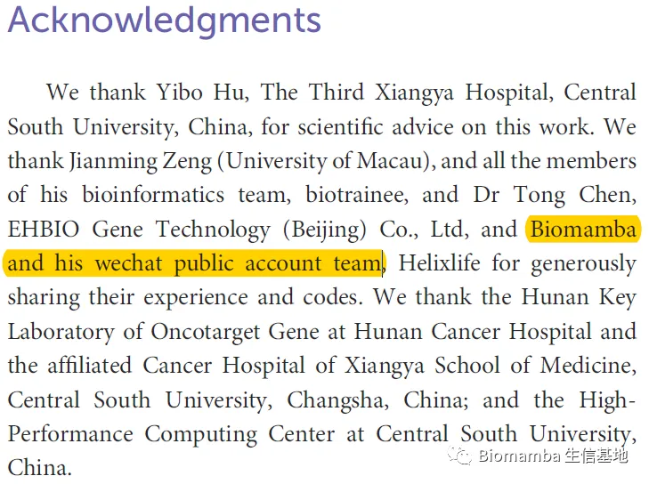
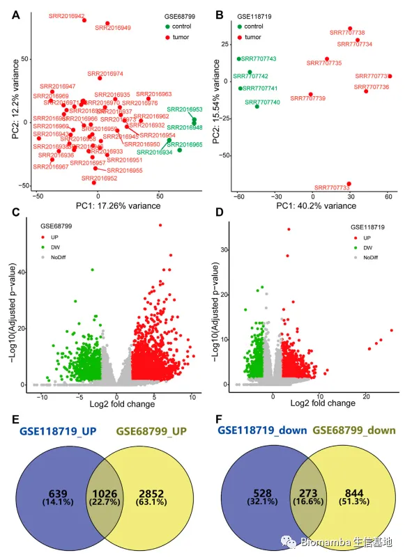
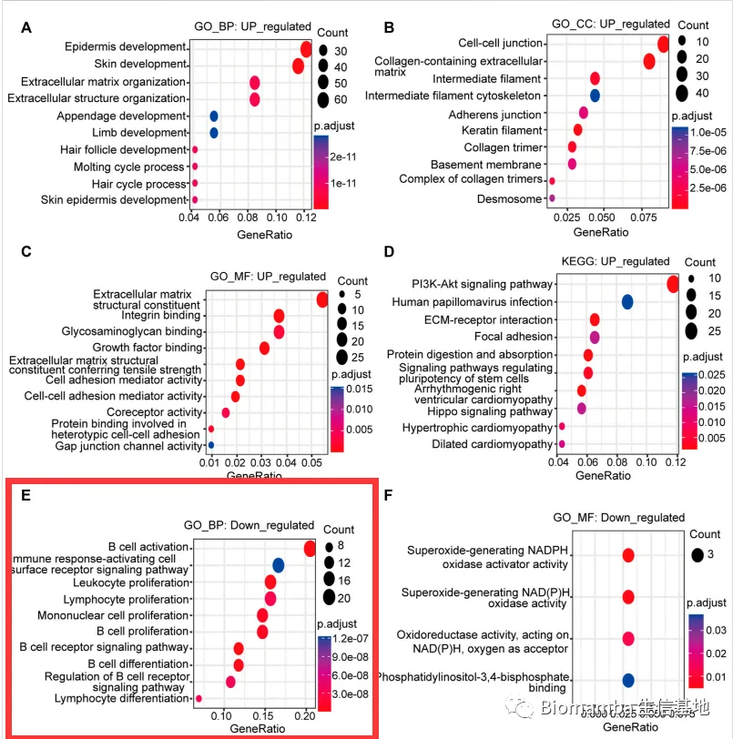
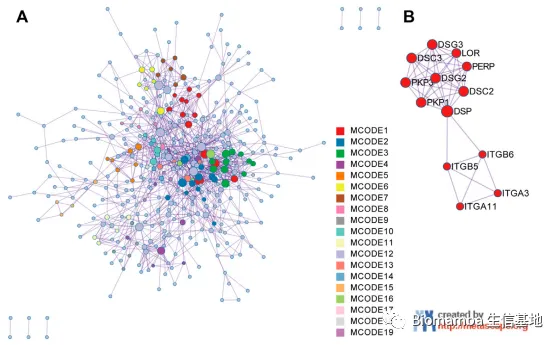
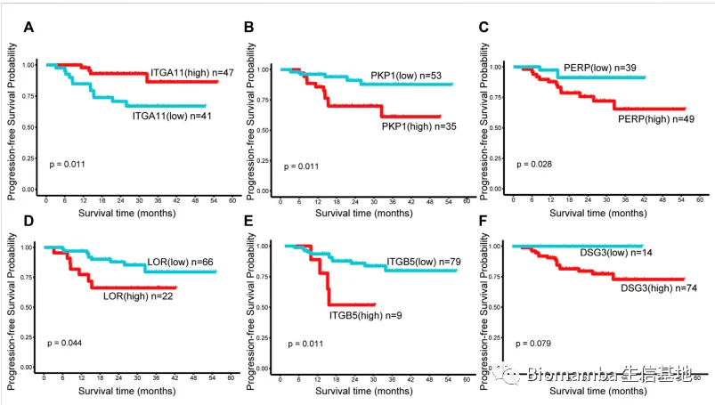
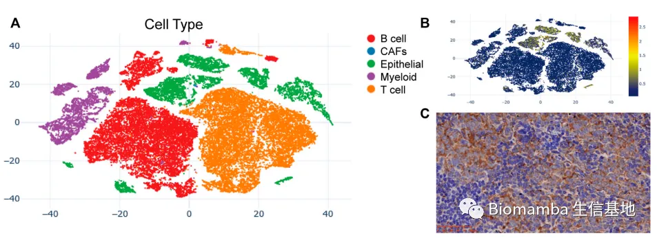
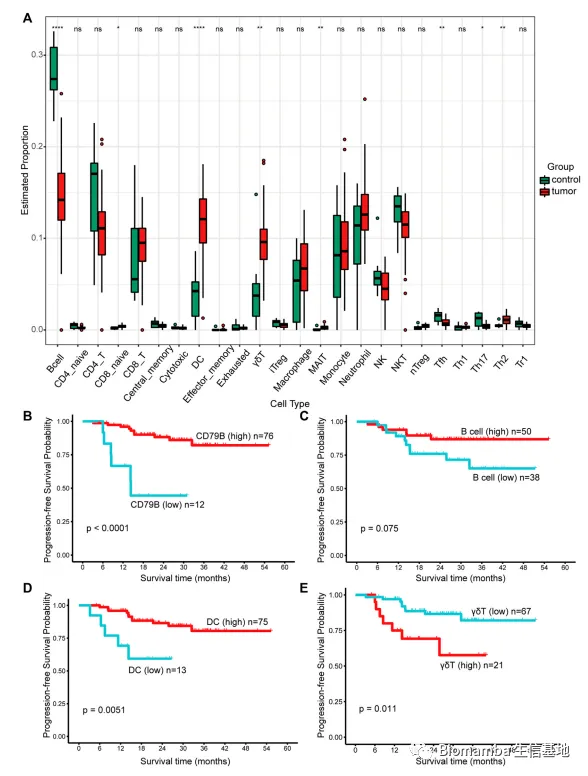
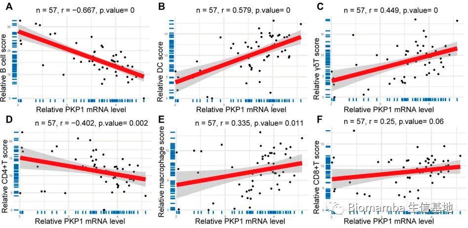
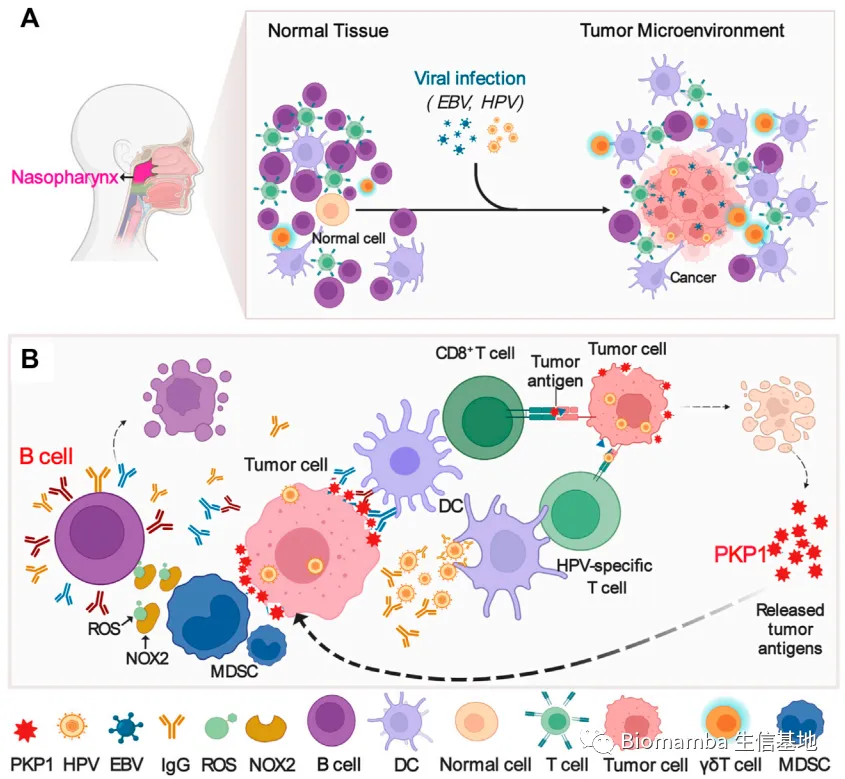

鼻咽癌的Bulk RNA-Seq与scRNA-Seq联合分析
原文：https://mp.weixin.qq.com/s?__biz=MzAwMzIzOTk5OQ==&mid=2247510548&idx=1&sn=58048c46e837b1d56dffa282272c6d96&chksm=9b3cd344ac4b5a52369e91b4e61fa0a2c951b82cc21165b99f42ba2c2191d4add803bd73c928#rd 合集：单细胞教程全收录 / 文献速递 / 粉丝来稿

写在前面
 今天给大家介绍的就是这篇发表在《Frontiers in Genetics 》上题为"Integrated analysis of bulk and single-cell RNA sequencing reveals the interaction of PKP1 and tumor-infiltrating B cells and their therapeutic potential for nasopharyngeal carcinoma"的文章，IF=4.8。作者在文章的Acknowledgement也是对我们进行了致谢 ：
今天给大家介绍的就是这篇发表在《Frontiers in Genetics 》上题为"Integrated analysis of bulk and single-cell RNA sequencing reveals the interaction of PKP1 and tumor-infiltrating B cells and their therapeutic potential for nasopharyngeal carcinoma"的文章，IF=4.8。作者在文章的Acknowledgement也是对我们进行了致谢 ：

这里也预祝我们的粉丝们早日命中心仪的期刊，若是大家觉得我平时分享的代码或生信教程有那么点 好用，可以在文章里以这种格式致谢Biomamba，希望咱们这个系列也能更新个百八十篇 :*
Since Biomamba and his wechat public account team produce bioinformatics tutorials elaborately and share code with annotation, we thank Biomamba for their guidance in bioinformatics and data analysis for the current study.
如果需要数据分析指导 、生信热点全文复现 、自测数据个性化分析 辅导，欢迎联系客服微信[Biomamba_yunying]
简介
其实近年来肿瘤免疫微环境一直比较火，但是主要聚焦于T Cell，而这篇文章的目光放在了B Cell 上。鼻咽癌的单细胞文献我们之前也讲解过(文献阅读（二十三）、鼻咽癌&肿瘤微环境&scRNA-Seq)这篇文章主要是联合了bulk RNA-Seq与scRNA-Seq来挖掘与鼻咽癌预后相关的biomarker，主体是数据挖掘的内容，也就是说基本无需经费。文章思路十分清晰，讲解起来也比较容易：B站同步播出，连播跳转更方便，文末阅读原文可直达：https://www.bilibili.com/video/BV1TV4y1J7X4?p=3PPT链接，建议用谷歌浏览器打开，微信或腾讯浏览器打开会显示失效：
https://pan.baidu.com/s/1OzMIb_pSE_Q1TB0igumD8w?pwd=pr2c

文献内容
Figure1中作者首先对两个GSE下的鼻咽癌数据进行了PCA分析(A-D)，可以发现Ctrl组与癌症组可以清晰的分离，PCA的教程我们之前也做过：答读者问 （二）为什么我的PCA分析报错了？
给你安排一个懂生信的工具人（八）：在线PCA分析
经差异分析后作者筛选出FDR<0.05且|log2FC|>2的差异基因做韦恩图(E-F)，发现两种来源的数据集间的上、下调差异基因均有不同程度的交集。

随后在下调基因的GO_BP(biological process)富集分析之中发现了大量与免疫相关的通路，并且其中大部分与B Cell相关联。
经过蛋白质网络互作分析(PPI教程：String：不仅仅是一个PPI分析平台.)，作者筛选出了一些核心基因用于下游的生存分析，并发现了显著的差异。

为了验证PKP1在bulk RNA-Seq的详细分布信息，作者挖掘了鼻咽癌scRNA-Seq 数据，发现PKP1在上皮细胞 中表达并通过免疫组化 的方式加以验证(又是Biomamba羡慕的，好想要临床样本)：
紧接着作者利用去卷积的方法进行免疫浸润 的评估(教程：什么？不做单细胞也能分析细胞类群和免疫浸润？)，发现其中一些特定类群的免疫细胞浸润程度差别很大，这里依然是通过生存分析来揭示其在鼻咽癌中的作用，CD79B作为B cell的一个marker，其表达波动对于生存期影响很高。如果将这些样本按照B cell、DC细胞、γδT细胞 的浸润评分高低分组，依然可以展示出很高的生存分析差异。

作者关注的PKP1，同样与上述的免疫细胞浸润评分呈现出显著的相关性，可以看出这个置信区间非常的小，这个基因主要与B Cell 呈现负相关关系 ，与DC 和γδT 呈现正相关的关系 。这种线性回归的分析我们也出过教程：来个线性回归分析
免疫微环境在鼻咽癌中发挥一定作用，这在上文的富集分析结果中有充足的证据。也有文献报道头颈癌的TME中有hpv特异性B细胞浸润，可分泌hpv特异性IgG抗体，通过增强抗原交叉呈递或产生和维持hpv特异性t细胞应答等间接作用促进抗肿瘤的免疫。因此，作者在最后推测，瘤内浸润的B细胞可产生免疫球蛋白G (IgG)抗体，增强树突状细胞呈递的肿瘤抗原的内化，进而激活肿瘤反应性T细胞启动机体对肿瘤的抵抗。但另一方面鼻咽癌细胞也在努力抵抗来自免疫系统的攻击：鼻咽癌细胞通过表达PKP1等蛋白(正常鼻咽中不存在)诱导髓样抑制细胞MDSCs扩增，进而通过表达iNOS和NOX2损害B细胞增殖，导致B细胞死亡。下面这张示意图精准传达了作者想展示的肿瘤、免疫细胞两方势力的斗争。


如何联系我们

 公众号后台消息回复不便，这里给大家留一下领取资料及免费服务器(足够支持你完成硕博生涯的生信环境)的微信号 ，方便各位随时交流、提建议（别问在么，添加时直接说来意）。此外呼声一直很高的交流群 也建好了，欢迎大家入群讨论：
公众号后台消息回复不便，这里给大家留一下领取资料及免费服务器(足够支持你完成硕博生涯的生信环境)的微信号 ，方便各位随时交流、提建议（别问在么，添加时直接说来意）。此外呼声一直很高的交流群 也建好了，欢迎大家入群讨论：
大家可以阅读完这几篇之后添加给生信入门初学者的小贴士 如何搜索公众号过往发布内容

 您点的每个赞和在看，我都认真当成了喜欢
您点的每个赞和在看，我都认真当成了喜欢